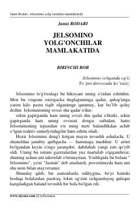

JYO'ta kuchli ovozga ega bolaning yolg'onchilar mamlakatidagi sarguzashtlari.
Janni Rodarining ushbu asari o'ta baland va kuchli ovozga ega bo'lgan Jelsomino ismli bola haqida hikoya qiladi. U yolg'onchilar hukmronlik qiladigan g'aroyib mamlakatga tushib qoladi va do'stlari bilan birgalikda adolatsizlikka qarshi kurashadi. Kitob bolalar va o'smirlar uchun qiziqarli sarguzashtlarga boy.